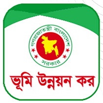
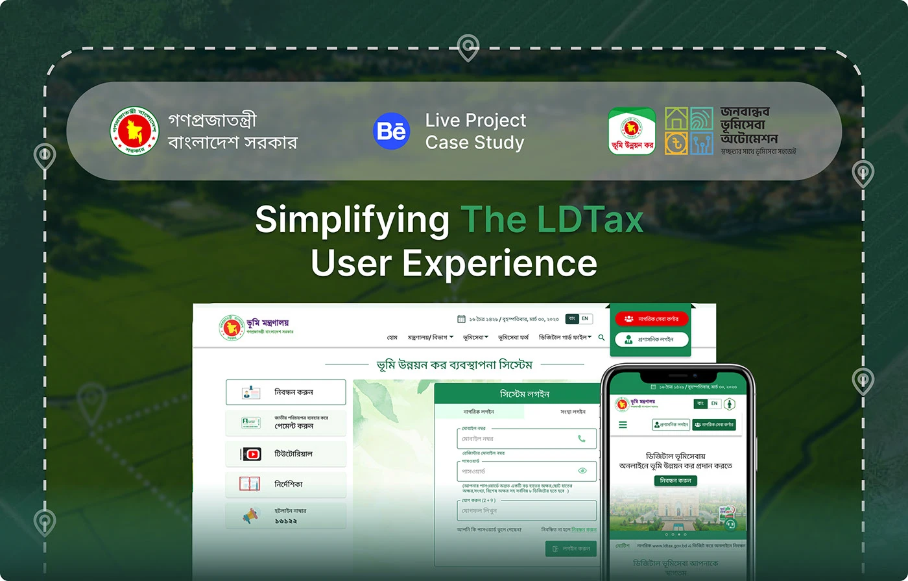
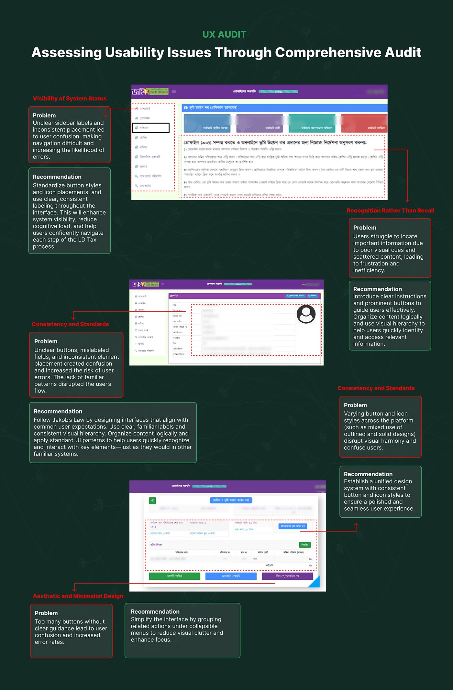
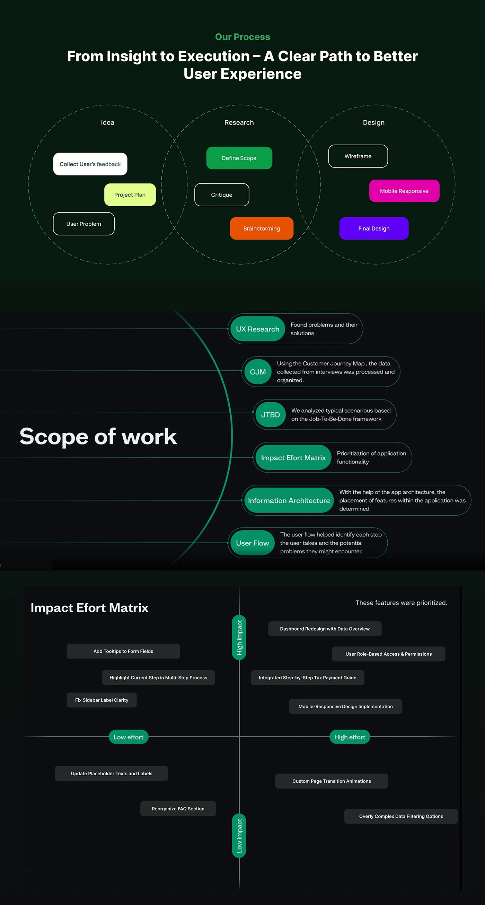
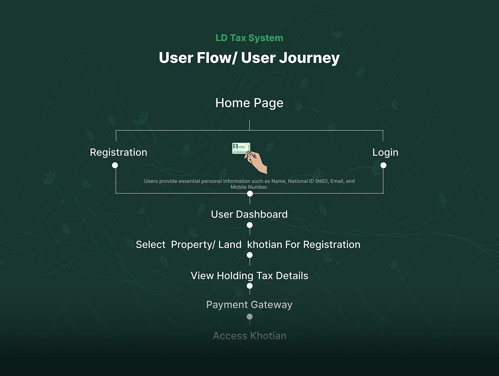
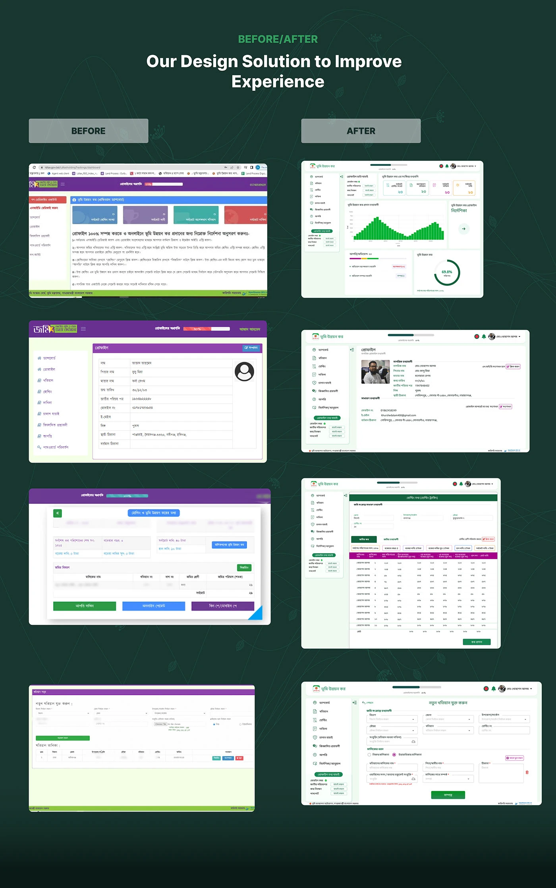
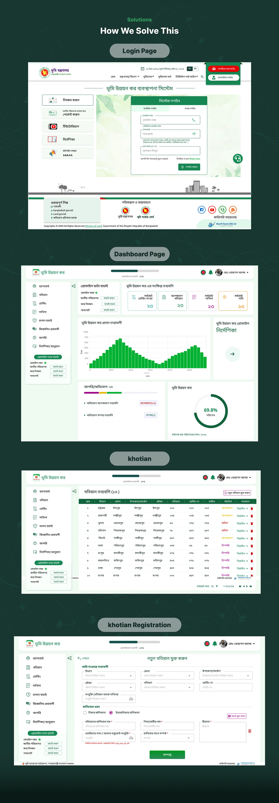
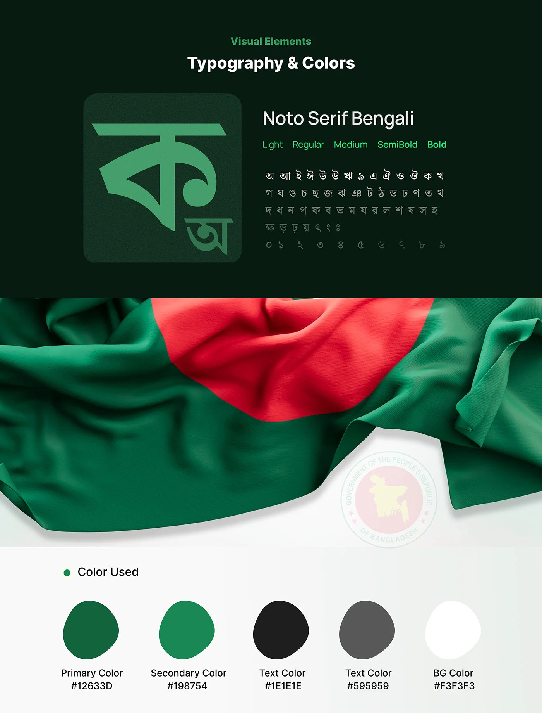
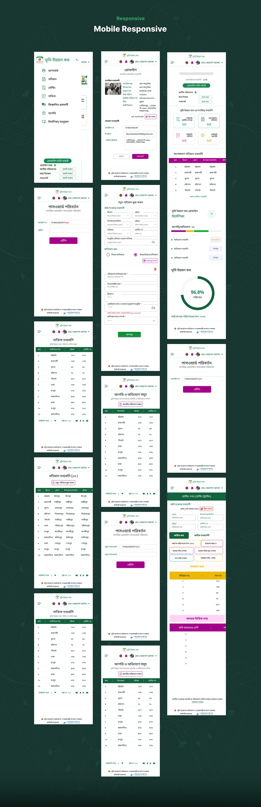
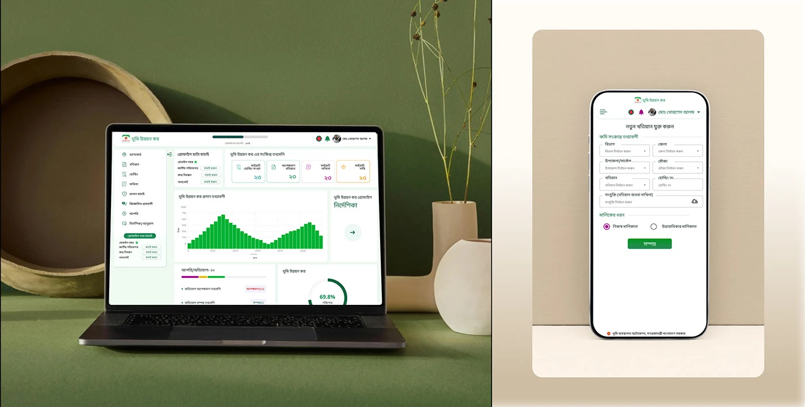

Government · Land tax · Mysoft Heaven
LD-Tax System & App
Bangladesh's online land development tax, redesigned so a citizen with little digital experience can register a khotian, see what they owe and pay it — on a laptop or a phone.

- Role
- UI/UX Designer — UX audit, user research, flows and UI
- Duration
- 2023–2024
- Platform
- Responsive web system and mobile
- Client
- Ministry of Land, Government of Bangladesh
- Tools
- Figma, FigJam, Illustrator, Notion, Google Sheets
01The problem
LD-Tax is how landowners in Bangladesh pay land development tax online. Nobody chooses to use it; if you own land, you have to.
The old system made that hard. Workflows were complicated, patterns changed from screen to screen, and it barely worked on a phone. Key features were hard to find, the instructions were a wall of Bangla text, and there was little help when people got stuck. The result was delayed payments and transactions left half-finished — worst for the people with the least digital experience.
02What it had to do
- Simplify navigation — clear categories and step-by-step processes, so the right form or payment is easy to find.
- Cut cognitive load — fewer fields, no jargon, and tooltips and contextual help for first-time and low-literacy users.
- Work on mobile — many users reach the portal on a phone or tablet, so it had to be touch-friendly and fast.
- Design for everyone who has to use it — older citizens, rural users, government officials and people with disabilities.
03The audit
I started by auditing the live system against usability heuristics, pairing every problem with a recommendation:
- Visibility of system status — sidebar labels were unclear and placed inconsistently, so people lost track of where they were in the tax process.
- Recognition rather than recall — important information was scattered with weak visual cues, so users had to hunt for it.
- Consistency and standards — unclear buttons, mislabelled fields, and outlined and solid icon styles mixed together.
- Aesthetic and minimalist design — screens full of equal-weight buttons with no guidance on which to press.

04Deciding what to fix first
Research ran from user feedback and interviews through a customer journey map, jobs-to-be-done scenarios, information architecture and user flows. The flow I designed for is short: register or log in with a National ID, select the khotian, see the holding tax, pay, and get the khotian back.
An impact–effort matrix decided the order. The quick wins — tooltips on form fields, highlighting the current step, clearer sidebar labels — went first. Next came the bigger, high-impact work: a dashboard redesign, role-based access, a step-by-step payment guide and a fully responsive build. Custom page transitions and complex data filters were left out, because they cost a lot and helped nobody pay their tax.


05The redesign
A dashboard that answers “what do I owe?” Holdings, pending khotians, dakhilas and demand sit in summary tiles at the top, with payment history and a completion ring underneath. Profile verification lives in the sidebar, so an unverified NID or mobile number is visible on every screen.
One pattern for every list. Khotian, dakhila and complaint pages share the same table, status colours and “details” link, so learning one screen teaches the rest. Receipts download as PDF from the row.
Forms that fill themselves. Adding a khotian or filing a complaint uses cascading division, district, upazila and mouza dropdowns, and the complaint form pre-fills the land details from the chosen holding instead of asking for them again.
Built on the national identity. Noto Serif Bengali
across five weights, and a palette taken from the flag: primary
#12633D, secondary #198754, on a light
#F3F3F3 ground.





06Credit
UX and UI for the Land Ministry's land management automation project, with Mysoft Heaven as technical partner. Published on Behance.
LD-Tax Portal
The public front door of the same service — home page, login and registration.
Say hello
Happy to walk through this project, or any of the others, on a call.